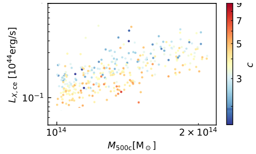
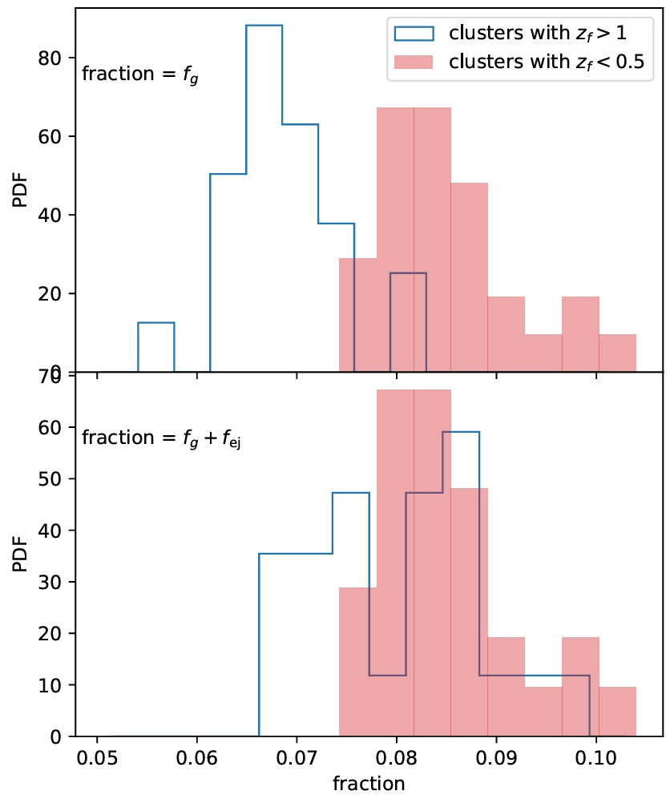

🚧Work in progress!🚧
^^ go back to parent lecture ^^

Source: Ragagnin et al. (2022b)
A first insight plotting gas content against concentration at fixed cluster mass revealed a clear anti-correlation: the more concentrated (i.e., the older) a cluster, the less gas it retains. Combined with the concentration–age link above, this chain of reasoning led to the paper's central claim: X-ray-faint clusters are, on average, simply older clusters.


The next question was why age would drain a cluster of its gas. The answer points to the supermassive black hole sitting at the center of the cluster's biggest galaxy. Over billions of years, this black hole intermittently feeds on surrounding gas and — in the process — launches powerful outflows of energy and radiation, known as AGN (Active Galactic Nucleus) feedback. Given enough time, this feedback can push a substantial fraction of a cluster's gas clean out beyond its outer boundary (the "virial radius"), never to return. Older clusters have simply had more time for this slow-motion eviction to run its course.
This is why I love simulations: With numerical simulations it is possible to actually dissect galaxy cluster components (gas, stars, dark matter)a and follow these objects in time.
Simulations mentioned in this piece, if you want to explore further:
- Magneticum Pathfinder Dolag et al. (2025)
- Millennium Simulation from Springel et al. (2005, Nature)
- Illustris, Vogelsberger et al. (2014, Nature), Pillepich et al. (2014)